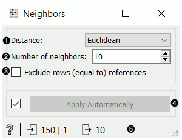
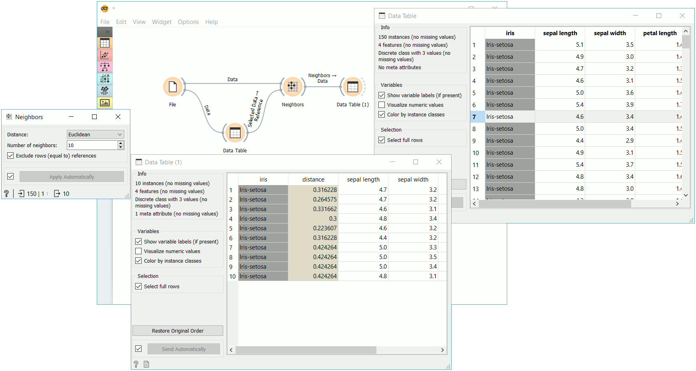
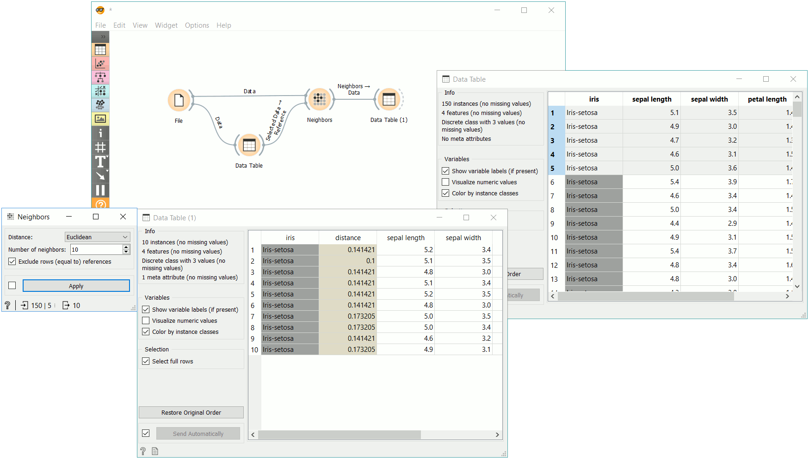

Neighbors
Compute nearest neighbors in data according to reference.
Inputs
- Data: An input data set.
- Reference: A reference data for neighbor computation.
Outputs
- Neighbors: A data table of nearest neighbors according to reference.
The Neighbors widget computes nearest neighbors for a given reference and for a given distance measure. The reference can be either one instance or more instances. In the case with one reference widget outputs closest n instances from data where n is set by the Number of neighbors option in the widget. When reference contains more instances widget computes the combined distance for each data instance as a minimum of distances to each reference. Widget outputs n data instances with lowest combined distance.

- Distance measure for computing neighbors. Supported measures are: Euclidean, Manhattan, Mahalanobis, Cosine, Jaccard, Spearman, absolute Spearman, Pearson, absolute Pearson.
- Number of neighbors on the output.
- If Exclude rows (equal to) references is ticked, data instances that are highly similar to the reference (distance < 1e-5), will be excluded.
- Click Apply to commit the changes. To communicate changes automatically tick Apply Automatically.
- Status bar with access to widget help and information on the input and output data.
Examples
In the first example, we used iris data and passed it to Neighbors and to Data Table. In Data Table, we selected an instance of iris, that will serve as our reference, meaning we wish to retrieve 10 closest examples to the select data instance. We connect Data Table to Neighbors as well.
We can observe the results of neighbor computation in Data Table (1), where we can see 10 closest images to our selected iris flower.

Now change the selection Data Table to multiple examples. As a result, we get instances with closest combined distances to the references. The method computes the combined distance as a minimum of distances to each reference.

Another example requires the installation of Image Analytics add-on. We loaded 15 paintings from famous painters with Import Images widget and passed them to Image Embedding, where we selected Painters embedder.
Then the procedure is the same as above. We passed embedded images to Image Viewer and selected a painting from Monet to serve as our reference image. We passed the image to Neighbors, where we set the distance measure to cosine, ticked off Exclude reference and set the neighbors to 2. This allows us to find the actual closest neighbor to a reference painting and observe them side by side in Image Viewer (1).